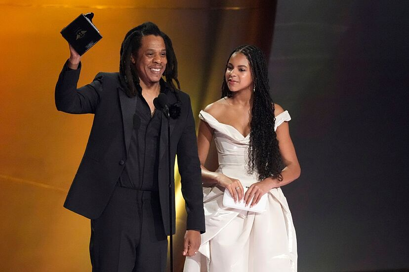
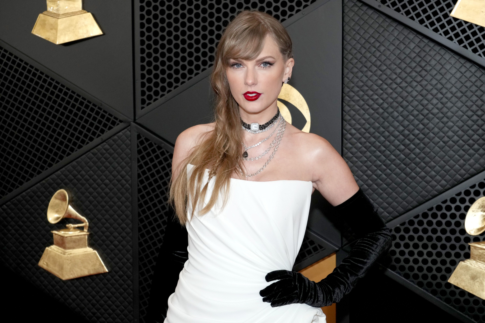

El paraiso musical EDÉN
BLOGS

Jay-Z
Jay-Z reclama por el Grammy que le falta a Beyoncé: ‘Ella tiene más premios que todos y nunca ha ganado el álbum del año’
La Academia de la Grabación subió las fotos del momento, pero no el video del discurso.
 4 Min
4 Min 3 Aug,20
Premios Grammy
De la aparición de Céline Dion hasta la detención de Killer Mike, estos fueron los momentos memorables de los Premios Grammy
Taylor Swift volvió a hacer historia el domingo al ganar su cuarto Grammy al Álbum del Año, una marca que ningún artista había alcanzado.
30 Jun,20

El cantante cuencano Javier Neira estrena ‘Tochita’, un nuevo ‘hit’ para este verano
Desde este viernes, 2 de febrero, estará disponible la canción que evoca un ambiente playero y de diversión
6 Jan,20

¿Quién ganará los Premios Grammy 2024? Estas son las predicciones de los expertos
Los Premios Grammy 2024 tiene una fuerte lista de nominaciones en cada categoría. Taylor Swift es de nuevo la gran favorita.
23 Nov,19